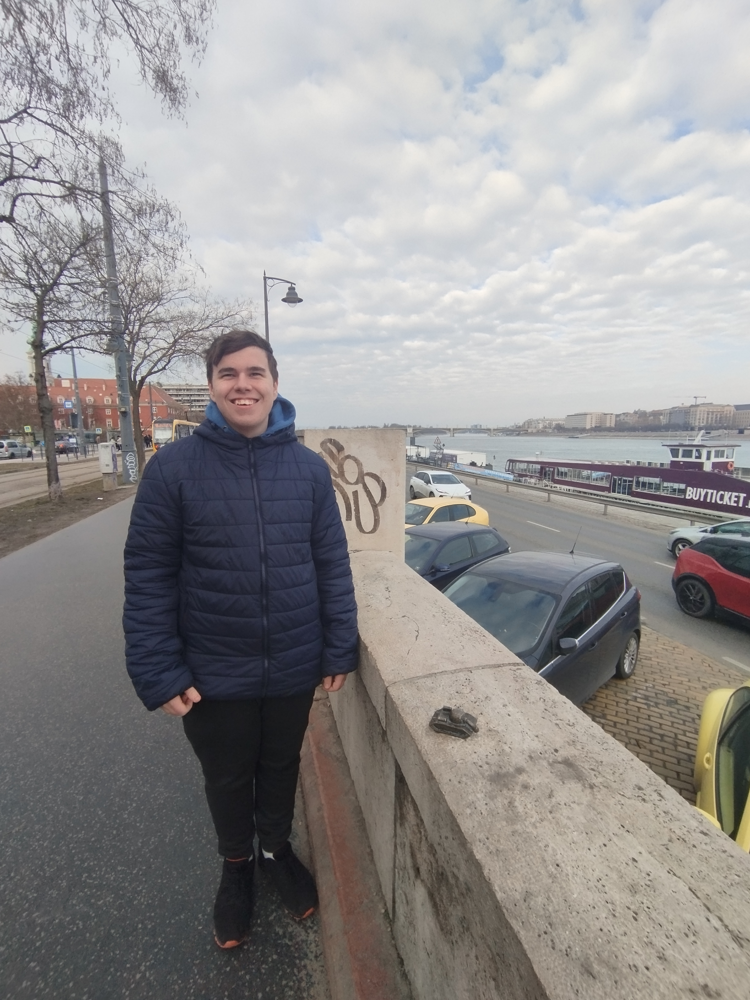

Lecso: Ez a szobor a magyaros ízek és a tradíciók egyedülálló szimbóluma...

Tank: A Kolodko Tank szobor a történelem és a humor elegáns összefonódása...

Bom: A Bom szobor a modern művészet különleges kifejeződése...

Gilinyo: A Gilinyo szobor játékossága és lendülete különleges hangulatot teremt...